Hexo和Github的搭建
hexo的初级搭建还有部署到github page上，以及个人域名的绑定。
Hexo搭建步骤
- 安装Git
- 安装Node.js
- 安装Hexo
- GitHub创建个人仓库
- 生成SSH添加到GitHub
- 将hexo部署到GitHub
- 设置个人域名
- 发布文章
安装Git
为了把本地的网页文件上传到github上面去，需要用到工具。Git是目前世界上最先进的分布式版本控制系统，可以有效、高速的处理从很小到非常大的项目版本管理。Git非常强大，建议每个人都去了解一下。廖雪峰老师的Git教程写的非常好，大家可以看一下。Git教程
windows：
到git官网上下载.exe文件,安装选项还是全部默认，只不过最后一步添加路径时选择Use Git from the Windows Command Prompt，这样我们就可以直接在命令提示符里打开git了。
顺便说一下，windows在git安装完后，就可以直接使用
git bash来敲命令行了，不用自带的cmd，cmd有点难用。
linux:
对linux来说实在是太简单了，因为最早的git就是在linux上编写的，只需要一行代码
sudo apt-get install git安装完成后在命令提示符中输入git --version来查看一下版本验证是否安装成功。
安装node.js
Hexo是基于node.js编写的，所以需要安装一下node.js和里面的npm工具。
windows：
下载稳定版或者最新版都可以Node.js，安装选项全部默认，一路点击Next。
最后安装好之后，按Win+R打开命令提示符，输入node -v和npm -v，如果出现版本号，那么就安装成功了。
linux：
命令行安装:
sudo apt-get install nodejs
sudo apt-get install npma不过不推荐命令行安装，有时候有问题，建议直接到官网去下载编译好的压缩文件，如图所示
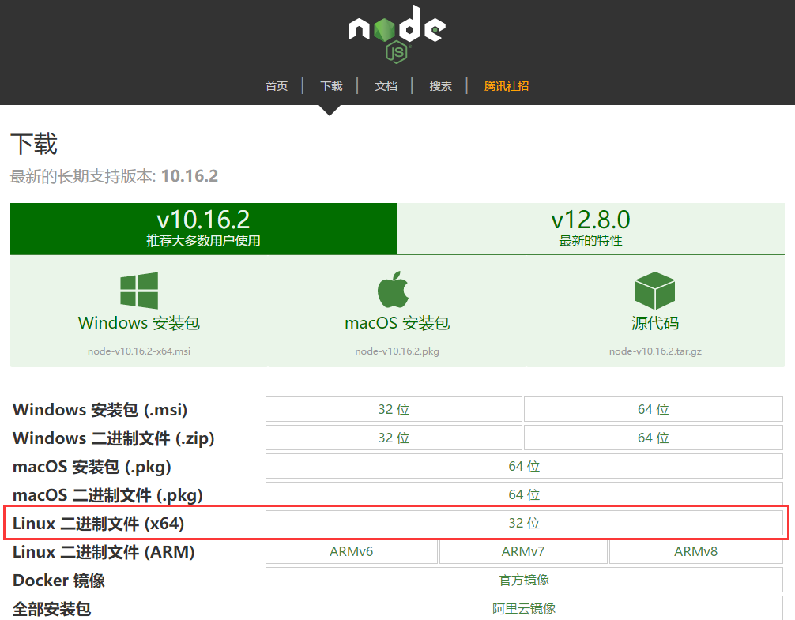
然后解压到你指定的文件夹即可，比如我解压到我系统的/home/shw/MySoftwares目录下了，如图:
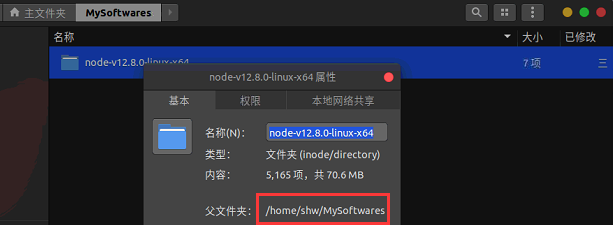
注意本压缩包是.tar.xz格式的，需要两次解压
配置一下环境变量
sudo vim /etc/profile复制下面两行到刚打开的profile文件最底部(注意node的安装地址/home/shw/MySoftwares/node-v12.8.0-linux-x64换成自己的)：
export NODE_HOME=/home/shw/MySoftwares/node-v12.8.0-linux-x64
export PATH=$PATH:$NODE_HOME/bin保存后退出，再执行下面命令将环境变量生效：
source /etc/profile将目录软链接到全局环境下（命令后面的/usr/local/bin/node是固定的）
sudo ln -s /home/shw/MySoftwares/node-v12.8.0-linux-x64/node /usr/local/bin/node
sudo ln -s /home/shw/MySoftwares/node-v12.8.0-linux-x64/npm /usr/local/bin/npm这样安装好了以后使用npm安装的包(比如：ionic serve)，使用包的命令时可能会提示找不到命令，没关系，在用户目录下终端执行下面命令固定写法：
echo -e "export PATH=$(npm prefix -g)/bin:$PATH" >> ~/.bashrc && source ~/.bashrc这样我们在所有用户，都可以使用npm，也可以使用npm安装的包的命令。成功的将nodejs安装并配置到全局环境下。安装完后，打开命令行终端，输入:
node -v
npm -v检查一下有没有安装成功
添加国内镜像源
如果没有梯子的话，可以使用阿里的国内镜像进行加速。
npm config set registry https://registry.npm.taobao.org安装Hexo
前面git和nodejs安装好后，就可以安装hexo了，你可以先创建一个文件夹MyBlog，用来存放自己的博客文件，然后cd到这个文件夹下（或者在这个文件夹下直接右键git bash打开）。比如我的博客文件都存放在D:\Study\MyBlog目录下。在该目录下右键点击Git Bash Here，打开git的控制台窗口，以后我们所有的操作都在git控制台进行，就不用Windows自带的cmd了。定位到该目录下，输入npm install -g hexo-cli安装Hexo。可能会有几个报错，无视它就行。
npm install -g hexo-cli安装完后输入hexo -v验证是否安装成功。
hexo -v至此hexo就安装完了。接下来初始化一下hexo,即初始化我们的网站，输入hexo init初始化文件夹
hexo init MyBlog这个MyBlog可以自己取什么名字都行，然后，接着输入npm install安装必备的组件。
cd MyBlog //进入这个MyBlog文件夹
npm install新建完成后，指定文件夹MyBlog目录下有：
node_modules:依赖包public:存放生成的页面scaffolds:生成文章的一些模板source:用来存放你的文章themes:主题**_config.yml:博客的配置文件**
这样本地的网站配置也弄好啦，输入hexo g生成静态网页，然后输入hexo s打开本地服务器，
hexo g
hexo server或者简写:hexo s
然后浏览器打开http://localhost:4000/，就可以看到我们的博客啦，效果如下：
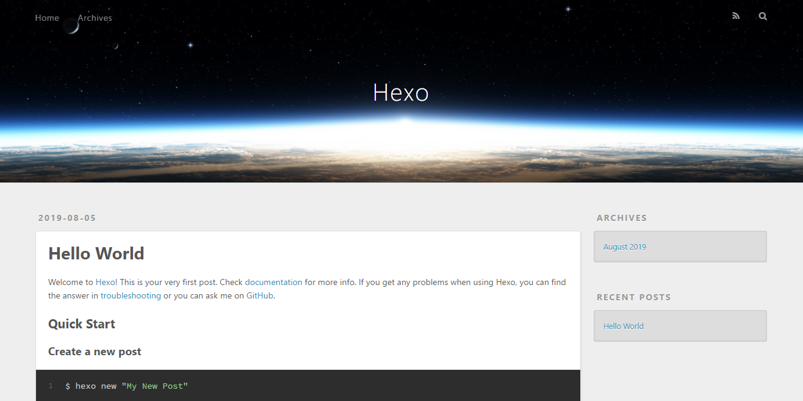
注册Github账号创建个人仓库
接下来就去注册一个github账号，用来存放我们的网站。大多数小伙伴应该都有了吧，作为一个合格的程序猿（媛）还是要有一个的。
注册Github账号
打开https://github.com/，新建一个项目仓库New repository，如下所示：
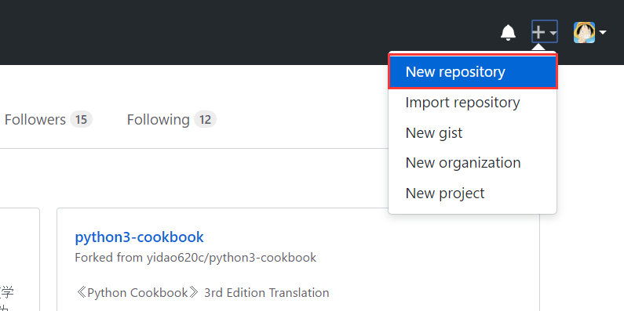
然后如下图所示，输入自己的项目名字，后面一定要加.github.io后缀，README初始化也要勾上。
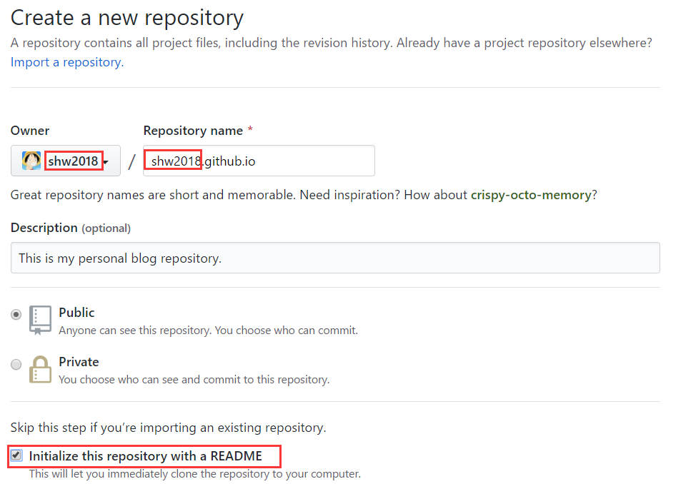
要创建一个和你用户名相同的仓库，后面加.http://github.io，只有这样，将来要部署到GitHub page的时候，才会被识别，也就是http://xxxx.github.io，其中xxx就是你注册GitHub的用户名。例如我的：http://lingzhifeng.github.io。
生成SSH添加到GitHub
生成SSH添加到GitHub，连接Github与本地。右键打开git bash，然后输入下面命令：
git config --global user.name "yourname"
git config --global user.email "youremail"这里的yourname输入你的GitHub用户名，youremail输入你GitHub的邮箱。这样GitHub才能知道你是不是对应它的账户。例如我的：
git config --global user.name "shw2018"
git config --global user.email "hwsun@std.uestc.edu.cn"可以用以下两条，检查一下你有没有输对
git config user.name
git config user.email然后创建SSH,一路回车，简单来讲，就是一个秘钥，其中，id_rsa是你这台电脑的私人秘钥，不能给别人看的，id_rsa.pub是公共秘钥，可以随便给别人看。把这个公钥放在GitHub上，这样当你链接GitHub自己的账户时，它就会根据公钥匹配你的私钥，当能够相互匹配时，才能够顺利的通过git上传你的文件到GitHub上。
ssh-keygen -t rsa -C "youremail"这个时候它会告诉你已经生成了.ssh的文件夹。在你的电脑中找到这个文件夹，如果是linux系统你要输入ls -a才能看到这个文件夹。或者git bash中输入
cat ~/.ssh/id_rsa.pub将输出的内容复制到框中，点击确定保存。切记一个字符也不能少也不能多，哪怕是空格也不行。打开github，在头像下面点击settings，再点击SSH and GPG keys，新建一个SSH，名字随便取一个都可以，把你的id_rsa.pub里面的信息复制进去。如图：
在git bash输入ssh -T git@github.com，如果如下图所示，出现你的用户名，那就成功了。
将hexo部署到GitHub
这一步，我们就可以将hexo和GitHub关联起来，也就是将hexo生成的文章部署到GitHub上，打开博客根目录下的_config.yml文件，这是博客的配置文件，在这里你可以修改与博客配置相关的各种信息。修改最后一行的配置：
deploy:
type: git
repository: https://github.com/lingzhifeng/lingzhifeng.github.io
branch: masterrepository修改为你自己的github项目地址即可，就是部署时，告诉工具，将生成网页通过git方式上传到你对应的链接仓库中。这个时候需要先安装deploy-git ，也就是部署的命令,这样你才能用命令部署到GitHub。
npm install hexo-deployer-git --save然后
hexo clean
hexo generate
hexo deploy其中hexo clean清除了你之前生成的东西，也可以不加。 hexo generate顾名思义，生成静态文章，可以用hexo g缩写，hexo deploy部署文章，可以用hexo d缩写。
注意
deploy时可能要你输入username和password。
得到下图就说明部署成功了，过一会儿就可以在http://yourname.github.io这个网站看到你的博客了！！
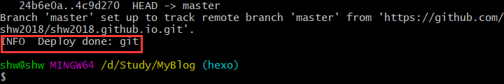
设置个人域名
现在你的个人网站的地址是yourname.github.io，如果觉得这个网址逼格不太够，这就需要你设置个人域名了。但是需要花钱。
不过，这一步不是必要的，如果目前还不想买域名可以先跳过，继续看后面的，以后想买域名了在还看这块
首先你得购买一个专属域名，xx云都能买，看你个人喜好了。这篇以腾讯云为例，腾讯云官网购买：
然后实名认证后进入腾讯云控制台，点云解析进去，找到你刚买的域名，点进去添加两条解析记录，如下图所示：
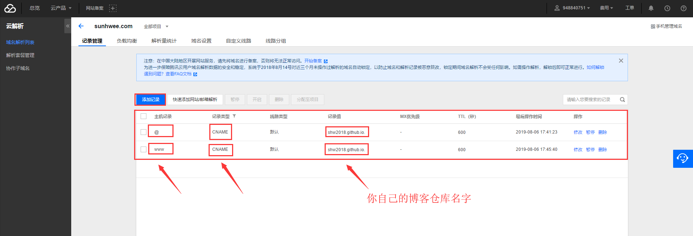
然后打开你的github博客项目，点击settings，拉到下面Custom domain处，填上你自己的域名，保存：
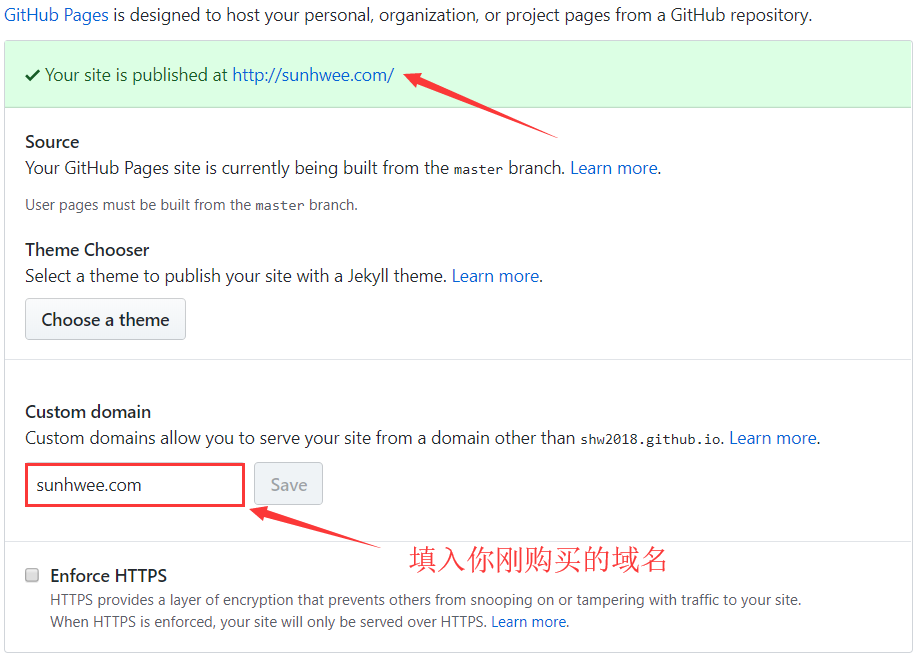
这时候你的项目根目录应该会出现一个名为CNAME的文件了。如果没有的话，打开你本地博客/source目录，我的是D:\Study\MyBlog\source，新建CNAME文件，注意没有后缀。然后在里面写上你的域名，保存。最后运行hexo g、hexo d上传到github。过不了多久，再打开你的浏览器，输入你自己的专属域名，就可以看到搭建的网站啦！
写文章、发布文章
首先在博客根目录下右键打开git bash，安装一个扩展npm i hexo-deployer-git。然后输入hexo new post "article title"，新建一篇文章。然后打开D:\Study\MyBlog\source\_posts的目录，可以发现下面多了一个文件夹和一个.md文件，一个用来存放你的图片等数据，另一个就是你的文章文件啦。你可以会直接在vscode里面编写markdown文件，可以实时预览，也可以用用其他编辑md文件的软件的工具编写。编写完markdown文件后，根目录下输入hexo g生成静态网页，然后输入hexo s可以本地预览效果，最后输入hexo d上传到github上。这时打开你的github.io主页就能看到发布的文章啦。
到这儿基本第一部分就完成了，已经完整搭建起一个比较简陋的个人博客了，接下来我们就可以对我们的博客进行个性化定制了。
第二部分 定制
我们要定制自己的博客的话，首先就要来了解一下Hexo博客的一些目录和文件的作用，以及如何平滑更换漂亮的主题模板并加入自己的定制源代码实现个性化定制
Hexo相关目录文件
博客目录构成介绍
从上图可以看出，博客的目录结构如下：
- node_modules
- public
- scaffolds
- source
- _data
- _posts
- about
- archives
- categories
- friends
- tags
- themesnode_modules是node.js各种库的目录，public是生成的网页文件目录，scaffolds里面就三个文件，存储着新文章和新页面的初始设置，source是我们最常用到的一个目录，里面存放着文章、各类页面、图像等文件，themes存放着主题文件，一般也用不到。我们平时写文章只需要关注source\_posts这个文件夹就行了。
hexo基本配置
在文件根目录下的_config.yml，就是整个hexo框架的配置文件了。可以在里面修改大部分的配置。详细可参考官方的配置描述。
网站
参数描述:title-网站标题、subtitle-网站副标题、description-网站描述、author-您的名字、language-网站使用的语言、timezone网站时区。Hexo 默认使用您电脑的时区。时区列表。比如说：America/New_York,Japan,和UTC。其中，description主要用于SEO，告诉搜索引擎一个关于您站点的简单描述，通常建议在其中包含您网站的关键词。author参数用于主题显示文章的作者。
网址
参数描述：url-网址、root-网站根目录、permalink-文章的永久链接格式、permalink_defaults-永久链接中各部分的默认值。
- 在这里，你需要把url改成你的网站域名。
- permalink，也就是你生成某个文章时的那个链接格式。
比如我新建一个文章叫temp.md，那么这个时候他自动生成的地址就是http://yoursite.com/2018/09/05/temp。
以下是官方给出的示例，关于链接的变量还有很多，需要的可以去官网上查找 永久链接 。
参数结果
- :year/:month/:day/:title/
2019/08/10/hello-world- :year-:month-:day-:title.html
2019-08-10-hello-world.html- :category/:title{foo,bar}
{foo,bar}/hello-world
再往下翻，中间这些都默认就好了。
theme: landscaptheme就是选择什么主题，也就是在themes这个文件夹下，在官网上有很多个主题，默认给你安装的是lanscape这个主题。当你需要更换主题时，在官网上下载，把主题的文件放在themes文件夹下，再修改这个主题参数就可以了。
Front-matter
Front-matter是md文件最上方以---分隔的区域，用于指定个别文件的变量，举例来说：
title: Hexo+Github博客搭建记录
date: 2019-08-10 21:44:44上面这个是预先定义的参数，您可在模板中使用这些参数值并加以利用。
参数描述：layout-布局、title-标题、date-建立日期、updated-更新日期、comments-开启文章的评论功能、tags-标签（不适用于分页）、categories-分类（不适用于分页）、permalink-覆盖文章网址。
其中，分类和标签需要区别一下，分类具有顺序性和层次性，也就是说Foo，Bar不等于Bar，Foo；而标签没有顺序和层次。
---
title: Hexo+Github博客搭建记录
date: 2019-08-10 21:44:44
author: So Cold
img: /medias/banner/7.jpg
coverImg: /medias/banner/7.jpg
top: true
cover: true
toc: true
password: 5f15b28ffe43f8be4f239bdd9b69af9d80dbafcb20a5f0df5d1677a120ae9110
mathjax: true
summary: 这是你自定义的文章摘要内容，如果这个属性有值，文章卡片摘要就显示这段文字，否则程序会自动截取文章的部分内容作为摘要
tags:
- Hexo
- Github
- 博客
categories:
- 软件安装与配置
---layout(布局)
post(默认布局)
当你每一次使用代码
hexo new XXX它其实默认使用的是post这个布局，也就是在source文件夹下的_post里面。Hexo有三种默认布局：post、page和draft，它们分别对应不同的路径，而您自定义的其他布局和post相同，都将储存到source/_posts文件夹。而new这个命令其实是：
hexo new [layout] "title"只不过这个layout默认是post罢了。
page
如果你想另起一页，那么可以使用
hexo new page newpage系统会自动给你在source文件夹下创建一个newpage文件夹，以及newpage文件夹中的index.md，这样你访问的newpage对应的链接就是http://xxx.xxx/newpage。
draft
draft是草稿的意思，也就是你如果想写文章，又不希望被看到，那么可以
hexo new draft newdraft这样会在source/_draft中新建一个newdraft.md文件，如果你的草稿文件写的过程中，想要预览一下，那么可以使用
hexo server --draft在本地端口中开启服务预览。
如果你的草稿文件写完了，想要发表到post中，
hexo publish draft newdraft就会自动把newdraft.md发送到post中。
更换主题
我们在了解Hexo博客文件基础之后，知道主题文件就放在themes文件下，那么我们就可以去Hexo官网下载喜欢的主题，复制进去然后修改参数即可。网上大多数主题都是github排名第一的Next主题，但是我个人不是很喜欢，我在网上看到一个主题感觉还不错：hexo-theme-matery，地址在传送门。这个主题看着比较漂亮，并且响应式比较友好，点起来很舒服，功能也比较很多。
当然，人各有异，这个主题风格也不一定是你喜欢，那么你也可以跟着这教程类似的方法替换成你喜欢的就行了。
特性：
- 简单漂亮，文章内容美观易读
- Material Design 设计
- 响应式设计，博客在桌面端、平板、手机等设备上均能很好的展现
- 首页轮播文章及每天动态切换 Banner 图片
- 瀑布流式的博客文章列表（文章无特色图片时会有 24 张漂亮的图片代替）
- 时间轴式的归档页
- 词云的标签页和雷达图的分类页
- 丰富的关于我页面（包括关于我、文章统计图、我的项目、我的技能、相册等）
- 可自定义的数据的友情链接页面
- 支持文章置顶和文章打赏
- 支持 MathJax
- TOC 目录
- 可设置复制文章内容时追加版权信息
- 可设置阅读文章时做密码验证
- Gitalk、Gitment、Valine 和 Disqus 评论模块（推荐使用 Gitalk）
- 集成了不蒜子统计、谷歌分析（Google Analytics）和文章字数统计等功能
- 支持在首页的音乐播放和视频播放功能
- 他的介绍文档写得非常的详细，还有中英文两个版本。
效果图如下：
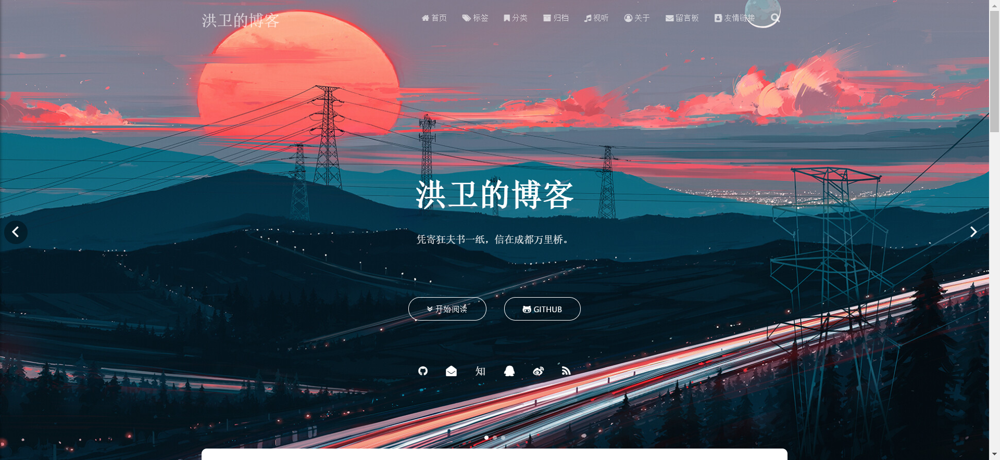
首先先按照文档教程安装一遍主题，然后是可以正常打开的，如果你是一般使用的话，基本没啥问题了。不过有些地方有些地方可以根据你自己的习惯和喜好修改一下， 下面记录一下我这个博客修改了的一些地方。
新建文章模板修改
首先为了新建文章方便，我们可以修改一下文章模板，建议将/scaffolds/post.md修改为如下代码：
---
title: {{ title }}
date: {{ date }}
author:
img:
coverImg:
top: false
cover: false
toc: true
mathjax: false
password:
summary:
tags:
categories:
---这样新建文章后 一些Front-matter参数不用你自己补充了，修改对应信息就可以了。
添加404页面
原来的主题没有404页面，我们加一个。首先在/source/目录下新建一个404.md，内容如下：
title: 404
date: 2019-08-5 16:41:10
type: "404"
layout: "404"
description: "Oops～，我崩溃了！找不到你想要的页面 :("然后在/themes/matery/layout/目录下新建一个404.ejs文件，内容如下：
<style type="text/css">
/* don't remove. */
.about-cover {
height: 75vh;
}
</style>
<div class="bg-cover pd-header about-cover">
<div class="container">
<div class="row">
<div class="col s10 offset-s1 m8 offset-m2 l8 offset-l2">
<div class="brand">
<div class="title center-align">
404
</div>
<div class="description center-align">
<%= page.description %>
</div>
</div>
</div>
</div>
</div>
</div>
<script>
// 每天切换 banner 图. Switch banner image every day.
$('.bg-cover').css('background-image', 'url(/medias/banner/' + new Date().getDay() + '.jpg)');
</script>
“关于”页面增加简历（可选）
修改/themes/matery/layout/about.ejs，找到<div class="card">标签，然后找到它对应的</div>标签，接在后面新增一个card，语句如下：
<div class="card">
<div class="card-content">
<div class="card-content article-card-content">
<div class="title center-align" data-aos="zoom-in-up">
<i class="fa fa-address-book"></i> <%- __('myCV') %>
</div>
<div id="articleContent" data-aos="fade-up">
<%- page.content %>
</div>
</div>
</div>
</div>
这样就会多出一张card，然后可以在/source/about/index.md下面写上你的简历了，当然这里的位置随你自己设置，你也可以把简历作为第一个card。
数学公式渲染和代码高亮
解决mathjax与代码高亮的冲突
如果你按照教程安装了代码高亮插件hexo-prism-plugin，单独使用是没有问题的，但如果你又使用了mathjax，并且按照网上教程，安装kramed插件并修改了js文件里的正则表达式（为了解决markdown和mathjax的语法冲突），那你的代码就无法高亮了。解决方法很简单，别用kramed插件了，还用原来自带的marked插件，直接改它的正则表达式就行了。
加数学公式显示
打开/themes/matery/layout中的post.ejs文件，在最下方粘贴如下代码：
<script type="text/javascript" src="http://cdn.mathjax.org/mathjax/latest/MathJax.js?config=default"></script>由于markdown语法与mathjax语法存在冲突，所以还需要修改源文件。打开/node_modules/marked/lib中的marked.js文件，第539行的escape:处替换成：
escape: /^$[`*\[\]()#$+\-.!_>])/第553行的em:处替换成：
em: /^\*((?:\*\*|[\s\S])+?)\*(?!\*)/这时在文章里写数学公式基本没有问题了，但是要注意：数学公式中如果出现了连续两个{，中间一定要加空格！
举个例子:
行内公式：$y = f(x)$
代码：
$y = f(x)$行间公式：
\[y = {f_{ {g_1}}}(x)\]
代码：
\\[y = {f_{ {g_1}}}(x)\\]注意上面花括号之间有空格！
增加建站时间
修改/themes/matery/layout/_partial中的footer.ejs，在最后加上：
<script language=javascript>
function siteTime() {
window.setTimeout("siteTime()", 1000);
var seconds = 1000;
var minutes = seconds * 60;
var hours = minutes * 60;
var days = hours * 24;
var years = days * 365;
var today = new Date();
var todayYear = today.getFullYear();
var todayMonth = today.getMonth() + 1;
var todayDate = today.getDate();
var todayHour = today.getHours();
var todayMinute = today.getMinutes();
var todaySecond = today.getSeconds();
/* Date.UTC() -- 返回date对象距世界标准时间(UTC)1970年1月1日午夜之间的毫秒数(时间戳)
year - 作为date对象的年份，为4位年份值
month - 0-11之间的整数，做为date对象的月份
day - 1-31之间的整数，做为date对象的天数
hours - 0(午夜24点)-23之间的整数，做为date对象的小时数
minutes - 0-59之间的整数，做为date对象的分钟数
seconds - 0-59之间的整数，做为date对象的秒数
microseconds - 0-999之间的整数，做为date对象的毫秒数 */
var t1 = Date.UTC(2017, 09, 11, 00, 00, 00); //北京时间2018-2-13 00:00:00
var t2 = Date.UTC(todayYear, todayMonth, todayDate, todayHour, todayMinute, todaySecond);
var diff = t2 - t1;
var diffYears = Math.floor(diff / years);
var diffDays = Math.floor((diff / days) - diffYears * 365);
var diffHours = Math.floor((diff - (diffYears * 365 + diffDays) * days) / hours);
var diffMinutes = Math.floor((diff - (diffYears * 365 + diffDays) * days - diffHours * hours) / minutes);
var diffSeconds = Math.floor((diff - (diffYears * 365 + diffDays) * days - diffHours * hours - diffMinutes * minutes) / seconds);
document.getElementById("sitetime").innerHTML = "本站已运行 " +diffYears+" 年 "+diffDays + " 天 " + diffHours + " 小时 " + diffMinutes + " 分钟 " + diffSeconds + " 秒";
}/*因为建站时间还没有一年，就将之注释掉了。需要的可以取消*/
siteTime();
</script>然后在合适的地方（比如copyright声明后面）加上下面的代码就行了：
<span id="sitetime"></span>修改不蒜子初始化计数
因为不蒜子至今未开放注册，所以没办法在官网修改初始化，只能自己动手了。和上一条一样，我们在/themes/matery/layout/_partial里的footer.ejs文件最后加上：
<script>
$(document).ready(function () {
var int = setInterval(fixCount, 50); // 50ms周期检测函数
var pvcountOffset = 80000; // 初始化首次数据
var uvcountOffset = 20000;
function fixCount() {
if (document.getElementById("busuanzi_container_site_pv").style.display != "none") {
$("#busuanzi_value_site_pv").html(parseInt($("#busuanzi_value_site_pv").html()) + pvcountOffset);
clearInterval(int);
}
if ($("#busuanzi_container_site_pv").css("display") != "none") {
$("#busuanzi_value_site_uv").html(parseInt($("#busuanzi_value_site_uv").html()) + uvcountOffset); // 加上初始数据
clearInterval(int); // 停止检测
}
}
});
</script>然后把上面几行有段代码：
<% if (theme.busuanziStatistics && theme.busuanziStatistics.totalTraffic) { %>
<span id="busuanzi_container_site_pv">
<i class="fa fa-heart-o"></i>
本站总访问量 <span id="busuanzi_value_site_pv" class="white-color"></span>
</span>
<% } %>
<% if (theme.busuanziStatistics && theme.busuanziStatistics.totalNumberOfvisitors) { %>
<span id="busuanzi_container_site_uv">
人次, 访客数 <span id="busuanzi_value_site_uv" class="white-color"></span> 人.
</span>
<% } %>修改为：
<% if (theme.busuanziStatistics && theme.busuanziStatistics.totalTraffic) { %>
<span id="busuanzi_container_site_pv" style='display:none'>
<i class="fa fa-heart-o"></i>
本站总访问量 <span id="busuanzi_value_site_pv" class="white-color"></span>
</span>
<% } %>
<% if (theme.busuanziStatistics && theme.busuanziStatistics.totalNumberOfvisitors) { %>
<span id="busuanzi_container_site_uv" style='display:none'>
人次, 访客数 <span id="busuanzi_value_site_uv" class="white-color"></span> 人.
</span>
<% } %>其实就是增加了两个style='display:none'而已。
添加动漫人物
其实三步就行了，不用像网上有些教程那么复杂。
第一步：
npm install --save hexo-helper-live2d第二步：
npm install live2d-widget-model-shizuku这里的动漫模型可以改，只需要下载对应模型就行了，你可以官方仓库去看有哪些模型，下载你喜欢的就行。
第三步：
在根目录配置文件中添加如下代码：
live2d:
enable: true
scriptFrom: local
pluginRootPath: live2dw/
pluginJsPath: lib/
pluginModelPath: assets/
tagMode: false
log: false
model:
use: live2d-widget-model-shizuku
display:
position: right
width: 150
height: 300
mobile:
show: false
react:
opacity: 0.7然后hexo g再hexo s就能预览出效果了，但是有个注意的地方，这个动漫人物最好不要和不蒜子同时使用，不然不蒜子会显示不出来。至于解决办法后续更新。
解决动漫人物和不蒜子不能同时使用的bug（2019.08.11）：
打开themes\matery\layout\_partial中的footer.ejs，将本站总访问量和访客数的代码改为如下：
<% if (theme.busuanziStatistics && theme.busuanziStatistics.totalTraffic) { %>
<span id="busuanzi_container_site_pv" style='display:none'></span>
<i class="fa fa-heart-o"></i>
本站总访问量 <span id="busuanzi_value_site_pv" class="white-color"></span>
<% } %>
<% if (theme.busuanziStatistics && theme.busuanziStatistics.totalNumberOfvisitors) { %>
<span id="busuanzi_container_site_uv" style='display:none'></span>
人次, 访客数 <span id="busuanzi_value_site_uv" class="white-color"></span> 人.
<% } %>变化就在下面两句，将源代码对应字段后面的</span>写在前面了。
<span id="busuanzi_container_site_pv" style='display:none'></span>
<span id="busuanzi_container_site_uv" style='display:none'></span>又出新Bug
发现按照上面改了过后，又出现一个新bug：文章头部的阅读次数不显示了，解决办法：（2019.08.11）：
打开themes\matery\layout\_partial中的post-detail.ejs，找到对应代码字段：
<% if (theme.busuanziStatistics && theme.busuanziStatistics.enable) { %>
<div id="busuanzi_container_page_pv" class="info-break-policy">
<i class="fa fa-eye fa-fw"></i><%- __('readCount') %>:
<span id="busuanzi_value_page_pv" ></span>
</div>
<% } %>修改为下面的就可以了：
<% if (theme.busuanziStatistics && theme.busuanziStatistics.enable) { %>
<span id="busuanzi_container_site_pv" style='display:none'></span>
<i class="fa fa-eye fa-fw"></i><%- __('readCount') %>:
<span id="busuanzi_value_page_pv" ></span>
<% } %>添加评论插件
由于这个主题自带了gittalk、gitment、valine等评论插件，所以我们只需要对应插件参数就行了，这个博客用的是gittalk，如下：
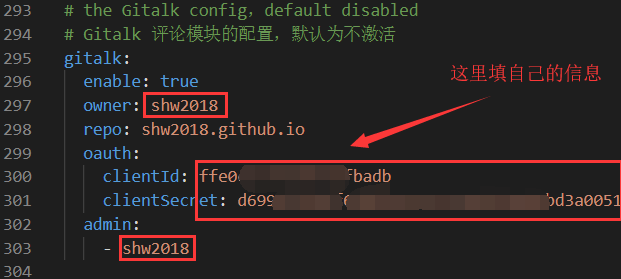
当然也可以用其他评论插件，只需要配置对应项就是了，不是自带的可以照着网上的教程自己弄一个，类似的文章有很多，可以搜索关键字就行了。
添加网易云音乐BGM
写文章的时候，想插入一段BGM怎么办？
其实我们可以借助一些在线音乐的外链播放方式，首先打开网易云网页版，找到想听的歌曲，然后点击生成外链：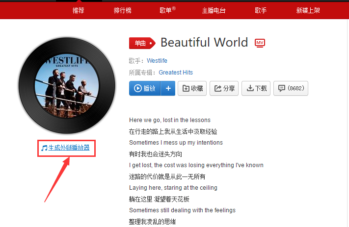
可能你会遇到问题，比如点击生成外链会提示你由于版权原因，不能生成，那么可以用下面办法目前还有效，不知道后面会不会失效
查找源代码
(以 Chrome为例，其他浏览器类似) 打开歌单页面，在“生成外链播放器”上右击，点击审查元素（检查）ctrl+shift+i；
找到链接路径
接着找到生成外链播放器这段文字直接双击复制前面的/outchain/2/20707408/
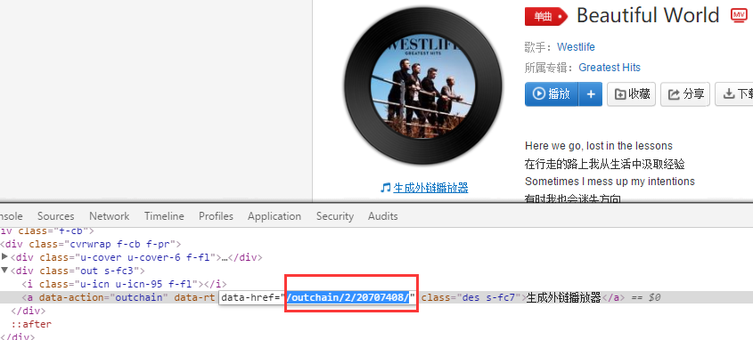
测试
然后在浏览器地址栏修改歌单链接，示例：http://music.163.com/#//outchain/2/20707408/然后就转到外链设置页面了。
复制Html代码
复制如下代码：
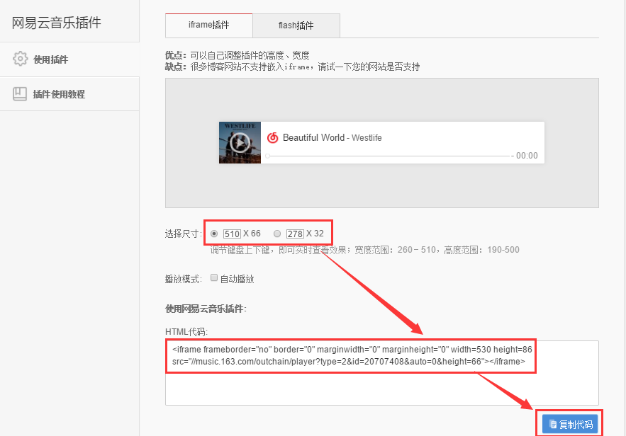
粘贴到文章对应位置就行了，为了美观，设置一下居中，具体代码如下：
<div align="middle">这里粘贴刚刚复制的代码</div>博客音乐板块
如果我们自己写博客写疲劳了，想放松一下听听歌又不想切出博客主页，那么我们可以自己定制一个博客音乐播放界面，把自己喜欢的歌曲都放进来，这里用到是Aplayer插件，但是歌曲来源需要我们自己定义，但是，因为各大音乐平台，由于版权原因，很多歌曲是不支持外链播放的，难道我们就必须每首歌下载然后上传云空间，再获取词曲封面么？这就比较麻烦了。其实不然，研究了半个小时，我发现可以采取下面的办法，很方便：
- 首先我们找到网易云在线平台，任意找到一首歌点进去播放，可以在地址栏拿到音乐ID号
- 然后通过下面网址：
http://music.163.com/song/media/outer/url?id=XXXXXX.mp3，XXXXXX就是歌曲ID号，每一首歌我们只需要换掉这个ID号就行了,就相当于每一首的外链了。 - 最后封面图也可以按F12去找页面元素的链接，填到对应的
musics.jason文件中就可以，批量填入，听到好听的歌曲随时更换随时新增，很方便。
操作如下图：
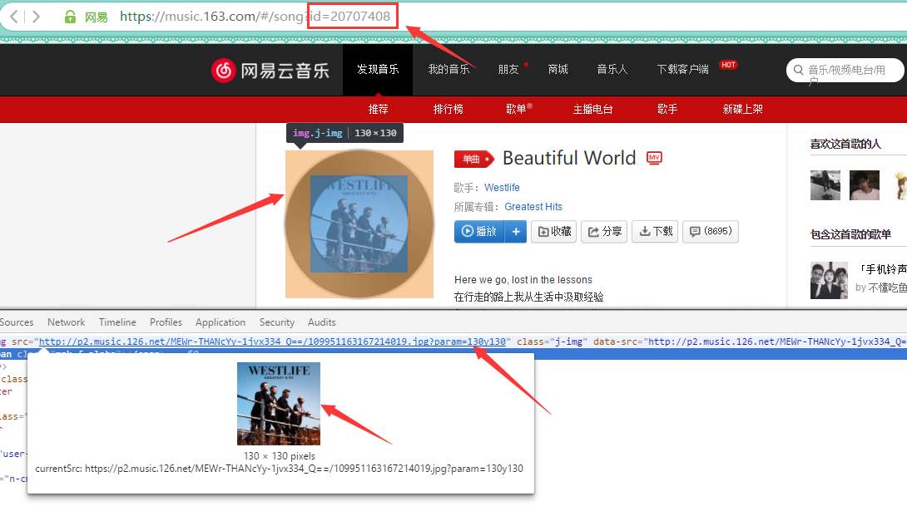
增加emoji支持
为博客新增对emoji表情的支持，使用到了hexo-filter-github-emojis的Hexo插件来支持emoji表情的生成，把对应的markdown emoji语法::（例如：:smile:、:smile:）转变成会跳跃的emoji表情，安装命令如下：
npm install hexo-filter-github-emojis --save在Hexo根目录下的_config.yml文件中，新增以下的配置项：
githubEmojis:
enable: true
className: github-emoji
inject: true
styles:
customEmojis:执行hexo clean && hexo g重新生成博客文件，然后就可以在文章中对应位置看到你用emoji语法写的表情了。如下图：
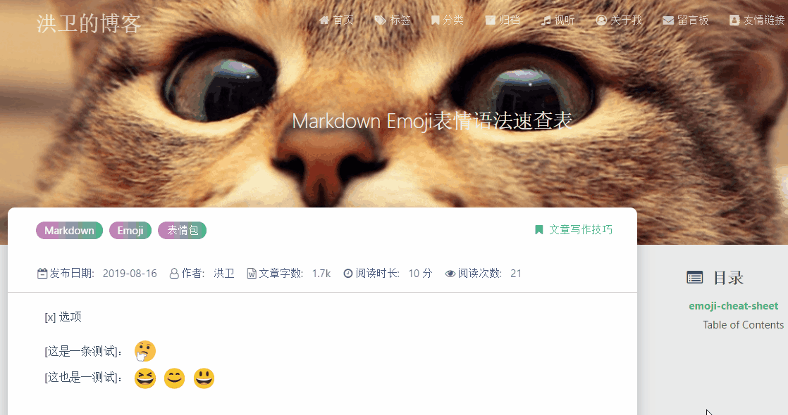
Valine评论模块修改
matery主题已经集成Valine评论模块，在主题配置文件.yml中配置相应的字段就行了。enable: true，XXX字段是需要自己注册登录leancloud官网，创建应用然后获取appId和appKey，其他参数根据自己的需求修改就是，如下：
valine:
enable: true
appId: XXXXXXXXXXXXXXXXXXXXX
appKey: XXXXXXXXXXXXXXXXXXXX
notify: true
verify: true
visitor: true
avatar: 'mm' # Gravatar style : mm/identicon/monsterid/wavatar/retro/hide
pageSize: 10
placeholder: 'just go go' # Comment Box placeholder注意：Valine用在matery主题上有个bug就是第一条评论位置会错位。如下图：
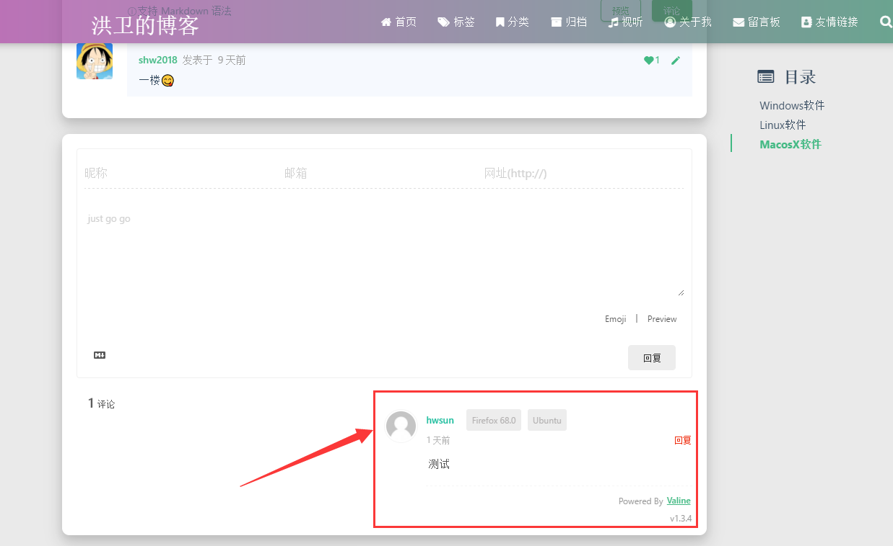
解决办法：F12开发者模式，控制台定位bug位置，修改参数，调整对应主题源文件参数，得以解决，如下图示：
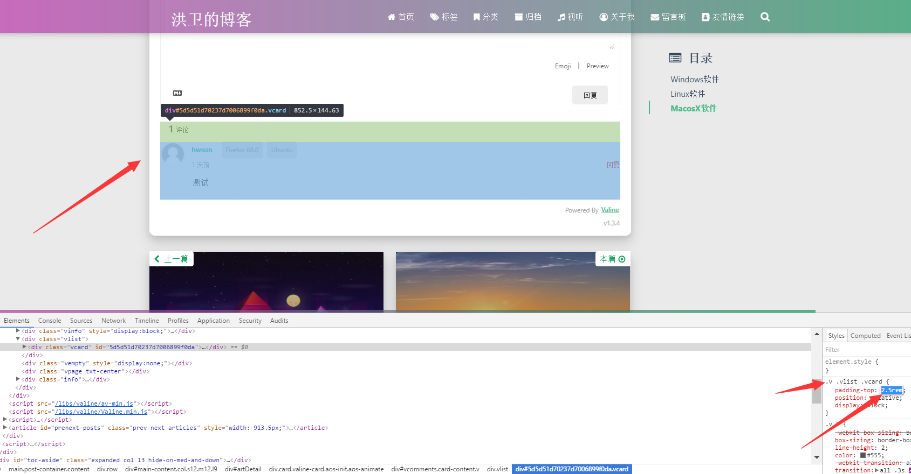
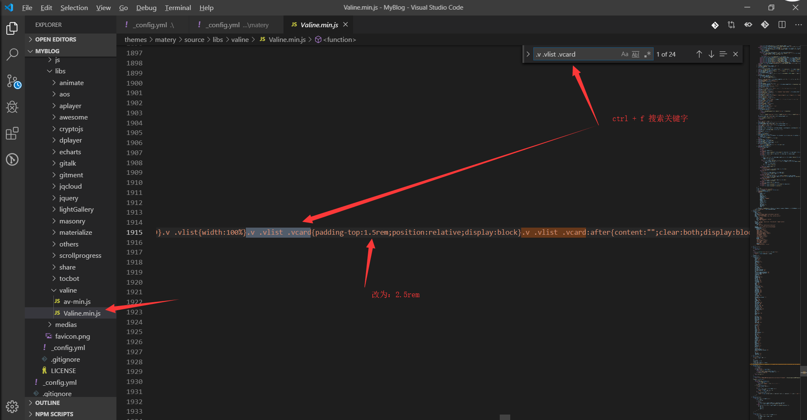
添加博客动态标签
原理就是给博客增加一个事件判断，如下图所示：
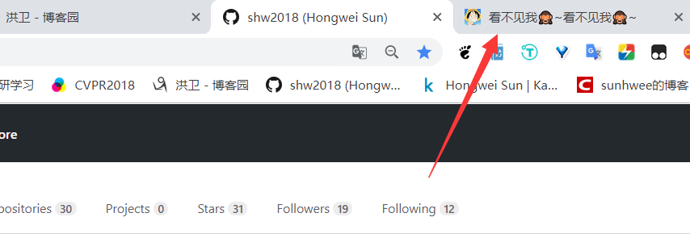
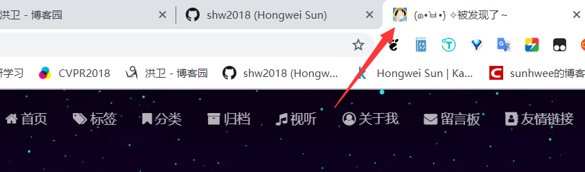
打开博客主题文件夹，路径：themes/matery/layout/layout.ejs，在对应位置添加如下代码：
<script type="text/javascript">
var OriginTitile = document.title,
st;
document.addEventListener("visibilitychange", function () {
document.hidden ? (document.title = "看不见我🙈~看不见我🙈~", clearTimeout(st)) : (document.title =
"(๑•̀ㅂ•́) ✧被发现了～", st = setTimeout(function () {
document.title = OriginTitile
}, 3e3))
})
</script>然后hexo clean && hexo g即可。
添加鼠标点击烟花爆炸效果
在/themes/matery/source/js新建文件fireworks.js，并添加如下代码。然后在/themes/matery/layout/_partial/footer.ejs中添加如下代码：
<% if (theme.fireworks.enable) { %>
<canvas class="fireworks" style="position: fixed; left: 0; top: 0; z-index: 1; pointer-events: none;" ></canvas>
<script type="text/javascript" src="//cdn.bootcss.com/animejs/2.2.0/anime.min.js"></script>
<script type="text/javascript" src="/js/fireworks.js"></script>
<% } %>在主题配置文件 .yml中配置:
# 鼠标点击烟花爆炸动效
fireworks:
enable: true添加页面樱花飘落动效
在/themes/matery/source/js新建文件sakura.js，并添加如下代码,然后在/themes/matery/layout/_partial/head.ejs中添加如下代码：
<% if (theme.sakura.enable) { %>
<script type="text/javascript">
//只在桌面版网页启用特效
var windowWidth = $(window).width();
if (windowWidth > 768) {
document.write('<script type="text/javascript" src="/js/sakura.js"></script>');
}
</script>
<% } %>在主题配置文件 .yml中配置:
# 页面樱花飘落动效
sakura:
enable: true添加鼠标点击文字特效
在/themes/matery/source/js新建文件wenzi.js，并添加如下代码。然后在/themes/matery/layout/_partial/head.ejs中添加如下代码：
<% if (theme.wenzi.enable) { %>
<script type="text/javascript">
//只在桌面版网页启用特效
var windowWidth = $(window).width();
if (windowWidth > 768) {
document.write('<script type="text/javascript" src="/js/wenzi.js"></script>');
}
</script>
<% } %>在主题配置文件 .yml中配置:
# 页面鼠标点击文字特效
wenzi:
enable: true添加页面雪花飘落动效
在/themes/matery/source/js新建文件xuehuapiaoluo.js，并添加如下代码。然后在/themes/matery/layout/_partial/head.ejs中添加如下代码：
<% if (theme.xuehuapiaoluo.enable) { %>
<script type="text/javascript">
//只在桌面版网页启用特效
var windowWidth = $(window).width();
if (windowWidth > 768) {
document.write('<script type="text/javascript" src="/js/xuehuapiaoluo.js"></script>');
}
</script>
<% } %>在主题配置文件 .yml中配置:
# 页面樱花飘落动效
xuehuapiaoluo:
enable: true添加博客天气插件
在搜寻插件的过程中无意间用 google 搜到的一个网站，使用非常简单，在这里附上插件添加的方法：
中国天气网：https://cj.weather.com.cn/plugin/pc
选择自定义插件—>自定义样式——>生成代码，然后会生成这样一段代码：
<!-- Weather Widget -->
<script type="text/javascript"> WIDGET = {FID: 'your FID'}</script>
<script type="text/javascript" src="https://apip.weatherdt.com/float/static/js/r.js?v=1111"></script>在/themes/matery/source/layout/_widget新建文件weather.ejs，把上面生成的代码添加进入,可以设置只有桌面端显示,如下修改:
<!-- 天气接口 洪卫 shw2018 add 2019.09.09 -->
<script type="text/javascript">
WIDGET = {FID: '1tFpFZ5Mtj'}
</script>
<!-- <script type="text/javascript" src="https://apip.weatherdt.com/float/static/js/r.js?v=1111"></script> -->
<script type="text/javascript">
//只在桌面版网页启用特效
var windowWidth = $(window).width();
if (windowWidth > 768) {
document.write('<script type="text/javascript" src="https://apip.weatherdt.com/float/static/js/r.js?v=1111"><\/script>');
}
</script>然后在/themes/matery/layout/_partial/layout.ejs中添加如下代码：
<!-- 天气接口控件 洪卫 shw2018 add 2019.09.09 -->
<% if (theme.weather.enable) { %>
<%- partial('_widget/weather') %>
<% } %>在主题配置文件 .yml中配置:
# 天气接口插件
weather:
enable: true展示效果可以参考我的主页
当然,如果你不想搞这么复杂,可以直接将下面代码插入/themes/matery/layout/_partial/layout.ejs中即可使用:
<script type="text/javascript">
WIDGET = {FID: '1tFpFZ5Mtj'}
</script>
<script type="text/javascript" src="https://apip.weatherdt.com/float/static/js/r.js?v=1111"></script>修复 Valine 头像不显示问题
关于头像显示问题，先去注册Gravatar，之前看文档说是七天的同步时间，结果一直也没有显示头像，检查查看头像链接，发现把&v=1.3.x去掉就可以了，于是下载js文件valine，下载后然后编辑，搜索关键字&v=，找到g.params=”?d=”+i.indexOf(a>-1?a:”mp”)+”&v=”+o+d，将"&v="+o+d删除即可，然后在Gravatar拿到头像的url填上去就行了：
valine:
enable: true
appId:
appKey:
notify: true
verify: true
visitor: true
# avatar: 'mp' # Gravatar style : mm/identicon/monsterid/wavatar/retro/hide
avatar: https://s.gravatar.com/avatar/0007991f99268c04f1aa4cdd9bea93b4?s=80
pageSize: 10
placeholder: '没有Github账号的在这里留言评论～' # Comment Box placeholder原因就是链接后跟了个&v=1.3.x，解决就是将这段删掉就可以了，具体到Valine.mini.js文件就是删掉&v="+o+d即可。
增加二级菜单
都知道，我们标题栏宽度有限，我们项目一多了，就放不下了，这时候你肯定就需要一个二级菜单来拆分一下项目，既可以减少标题栏项目数，使之更加清爽，又可以间项目分类，逻辑清晰。
好了，如果你用的matery主题，那么废话不多说，直接上教程，其实需要修改的就四个地方：matery.css/matery.js/navgation.ejs/mobile-nav.ejs
先找文件夹
首先在/themes/matery/layout/_partial中找到mobile-nav.ejs，找到下面这段代码：
<ul class="menu-list mobile-menu-list">
<% Object.keys(theme.menu).forEach(function(key) { %>
<li>
<a href="<%- theme.menu[key].url %>" class="waves-effect waves-light">
<% if (theme.menu[key].icon && theme.menu[key].icon.length > 0) { %>
<i class="fa fa-fw <%- theme.menu[key].icon %>"></i>
<% } else { %>
<i class="fa fa-fw fa-link"></i>
<% } %>
<%- (config.language === 'zh-CN' && menuMap.has(key)) ? menuMap.get(key) : key %>
</a>
</li>
<% }); %>
<% if (theme.githubLink && theme.githubLink.enable) { %>
<li><div class="divider"></div></li>
<li>
<a href="<%- theme.githubLink.url %>" class="waves-effect waves-light" target="_blank">
<i class="fa fa-github-square fa-fw"></i><%- theme.githubLink.title %>
</a>
</li>
<% } %>
</ul>替换成下面的：
<!-- 支持二级菜单特性 洪卫 shw2018 modify 2019.09.17 -->
<ul class="menu-list mobile-menu-list">
<% Object.keys(theme.menu).forEach(function(key) { %>
<li class="m-nav-item">
<% if(!theme.menu[key].children) { %>
<a href="<%- theme.menu[key].url %>" class="waves-effect waves-light">
<% if (theme.menu[key].icon && theme.menu[key].icon.length > 0) { %>
<i class="fa fa-fw <%- theme.menu[key].icon %>"></i>
<% } else { %>
<i class="fa fa-fw fa-link"></i>
<% } %>
<%- (config.language === 'zh-CN' && menuMap.has(key)) ? menuMap.get(key) : key %>
</a>
<% } else { %>
<a href="javascript:;">
<% if (theme.menu[key].icon && theme.menu[key].icon.length > 0) { %>
<i class="fa fa-fw <%- theme.menu[key].icon %>"></i>
<% } else { %>
<i class="fa fa-fw fa-link"></i>
<% } %>
<%- (config.language === 'zh-CN' && menuMap.has(key)) ? menuMap.get(key) : key %>
<span class="m-icon"><i class="fa fa-chevron-right"></i></span>
</a>
<ul>
<% for(let childrenLink of theme.menu[key].children){ %>
<li>
<a href="<%- url_for(childrenLink.url)%>" >
<% if (childrenLink.icon && childrenLink.icon.length > 0) { %>
<i class="fa <%- childrenLink.icon %>" style="left: 25px; position: absolute;"></i>
<% } %>
<span><%- childrenLink.name %></span>
</a>
</li>
<% } %>
</ul>
<% } %>
</li>
<% }); %>
<% if (theme.githubLink && theme.githubLink.enable) { %>
<li><div class="divider"></div></li>
<li>
<a href="<%- theme.githubLink.url %>" class="waves-effect waves-light" target="_blank">
<i class="fa fa-github-square fa-fw"></i><%- theme.githubLink.title %>
</a>
</li>
<% } %>
</ul>修改第二处
在/themes/matery/layout/_partial中找到navagtion.ejs，找到下面这段代码：
<a href="#" data-target="mobile-nav" class="sidenav-trigger button-collapse"><i class="fa fa-navicon"></i></a>
<ul class="right">
<% Object.keys(theme.menu).forEach(function(key) { %>
<li class="hide-on-med-and-down">
<a href="<%- theme.menu[key].url %>" class="waves-effect waves-light">
<% if (theme.menu[key].icon && theme.menu[key].icon.length > 0) { %>
<i class="fa <%- theme.menu[key].icon %>"></i>
<% } %>
<span><%- (config.language === 'zh-CN' && menuMap.has(key)) ? menuMap.get(key) : key %></span>
</a>
</li>
<% }); %>
<li>
<a href="#searchModal" class="modal-trigger waves-effect waves-light">
<i id="searchIcon" class="fa fa-search" title="<%= __('search') %>"></i>
</a>
</li>
</ul>替换成下面的：
<!-- 支持二级菜单特性 洪卫 shw2018 modify 2019.09.17 -->
<a href="#" data-target="mobile-nav" class="sidenav-trigger button-collapse"><i class="fa fa-navicon"></i></a>
<ul class="right nav-menu">
<% Object.keys(theme.menu).forEach(function(key) { %>
<li class="hide-on-med-and-down nav-item" >
<% if(!theme.menu[key].children) { %>
<a href="<%- theme.menu[key].url %>" class="waves-effect waves-light">
<% if (theme.menu[key].icon && theme.menu[key].icon.length > 0) { %>
<i class="fa <%- theme.menu[key].icon %>"></i>
<% } %>
<span><%- (config.language === 'zh-CN' && menuMap.has(key)) ? menuMap.get(key) : key %></span>
</a>
<% } else { %>
<a href="<%- theme.menu[key].url %>" class="waves-effect waves-light">
<% if (theme.menu[key].icon && theme.menu[key].icon.length > 0) { %>
<i class="fa <%- theme.menu[key].icon %>"></i>
<% } %>
<span><%- (config.language === 'zh-CN' && menuMap.has(key)) ? menuMap.get(key) : key %></span>
<i class="fa fa-chevron-down" aria-hidden="true"></i>
</a>
<ul class="sub-nav menus_item_child ">
<% for(let childrenLink of theme.menu[key].children){ %>
<li>
<a href="<%- url_for(childrenLink.url)%>" >
<% if (childrenLink.icon && childrenLink.icon.length > 0) { %>
<i class="fa <%- childrenLink.icon %>" style="margin-top: -20px;"></i>
<% } %>
<span><%- childrenLink.name %></span>
</a>
</li>
<% } %>
</ul>
<% } %>
</li>
<% }); %>
<li>
<a href="#searchModal" class="modal-trigger waves-effect waves-light">
<i id="searchIcon" class="fa fa-search" title="<%= __('search') %>"></i>
</a>
</li>
</ul>该第三处
在/themes/matery/source/css中找到matery.css，在最后添加下面这段代码：
/* 二级菜单样式定义 洪卫 shw2018 add 2019.09.17 */
.nav-menu {}
.nav-menu li .sub-nav {
position: absolute;
top: 77px;
list-style: none;
margin-left: -20px;
display: none;
}
.nav-menu li .sub-nav li {
text-align: center;
clear: left;
width: 140px;
height: 35px;
line-height: 35px;
position: relative;
}
.nav-menu li .sub-nav li a {
height: 34px;
line-height: 34px;
width: 138px;
padding: 0px;
display: inline-block;
border-radius: 5px;
color: #000;
}
.nav-show i[aria-hidden=true] {
-webkit-transform: rotate(180deg) !important;
-moz-transform: rotate(180deg) !important;
-o-transform: rotate(180deg) !important;
-ms-transform: rotate(180deg) !important;
transform: rotate(180deg) !important;
-webkit-transition: all .3s;
-moz-transition: all .3s;
-o-transition: all .3s;
-ms-transition: all .3s;
transition: all .3s;
}
.menus_item_child {
background-color: rgba(255, 255, 255, .8);
width: fit-content;
border-radius: 10px;
-webkit-box-shadow: 0 5px 20px -4px rgba(0, 0, 0, .5);
box-shadow: 0 5px 20px -4px rgba(0, 0, 0, .5);
display: none;
opacity: 0.98;
-ms-filter: none;
filter: none;
-webkit-animation: sub_menus .3s .1s ease both;
-moz-animation: sub_menus .3s .1s ease both;
-o-animation: sub_menus .3s .1s ease both;
-ms-animation: sub_menus .3s .1s ease both;
animation: sub_menus .3s .1s ease both;
}
.menus_item_child:before {
content: "";
position: absolute;
top: -20px;
left: 50%;
margin-left: -10px;
border-width: 10px;
border-style: solid;
border-color: transparent transparent rgba(255, 255, 255, .8)
}
.m-nav-item {
/* position: relative; */
left: 45px
}
.m-nav-item ul {
display: none;
background: rgba(255, 255, 255, .1);
}
.m-nav-item ul li {
width: 245px;
height: 50px;
line-height: 50px;
text-align: center;
}
.m-nav-show .m-icon {
-webkit-transform: rotate(90deg) !important;
-moz-transform: rotate(90deg) !important;
-o-transform: rotate(90deg) !important;
-ms-transform: rotate(90deg) !important;
transform: rotate(90deg) !important;
-webkit-transition: all .3s;
-moz-transition: all .3s;
-o-transition: all .3s;
-ms-transition: all .3s;
transition: all .3s;
}
.m-nav-show .m-nav-item>a:hover {
color: #FFF;
background: rgba(255, 255, 255, .8);
}
.m-nav-show>a:before,
.m-nav-item>a:hover:before {
opacity: 1;
}
.m-nav-item .m-icon {
position: absolute;
right: 65px;
height: 50px;
padding: 0px;
margin: 0px;
}
.nav-item li:hover a {
color: #FFF;
background: rgba(0, 0, 0, .1);
}改第四处
在/themes/matery/source/js中找到matery.js，在最后一个});前添加下面这段代码：
// 增加二级菜单功能 洪卫 shw2018 add 2019.09.17
$(".nav-menu>li").hover(function(){
$(this).children('ul').stop(true,true).show();
$(this).addClass('nav-show').siblings('li').removeClass('nav-show');
},function(){
$(this).children('ul').stop(true,true).hide();
$('.nav-item.nav-show').removeClass('nav-show');
})
$('.m-nav-item>a').on('click',function(){
if ($(this).next('ul').css('display') == "none") {
$('.m-nav-item').children('ul').slideUp(300);
$(this).next('ul').slideDown(300);
$(this).parent('li').addClass('m-nav-show').siblings('li').removeClass('m-nav-show');
}else{
$(this).next('ul').slideUp(300);
$('.m-nav-item.m-nav-show').removeClass('m-nav-show');
}
});修改配置文件
在主题配置文件.yml修改标题栏内容，按下面格式更改:
标题一级:
url: /XXX
icon: fa-XXXX
children:
-
name: 标题二级1
url: /XXX/XXX
icon: fa-XXXX
-
name: 标题二级2
url: /XXX/XXX
icon: fa-XXXX建立存放目录
在source文件夹新建对应的标题目录，并放index.md模板就行了。到这一步就大功告成了，快去体验吧。
第三部分 优化
hexo添加各种优化功能，比如SEO优化等。
网站SEO优化
网站推广是一个比较烦人的事情，特别是对于专心搞技术的来说，可能就不是很擅长，那么怎么才能让别人知道我们网站呢？也就是说我们需要想办法让别人通过搜索就可以搜索到博客的内容，给我们带来自然流量，这就需要seo优化,让我们的站点变得对搜索引擎友好。
SEO是由英文
Search Engine Optimization缩写而来， 中文意译为“搜索引擎优化”。SEO是指通过站内优化比如网站结构调整、网站内容建设、网站代码优化等以及站外优化。
让百度收录你的站点
首先要做的就是让各大搜索引擎收录你的站点，我们在刚建站的时候各个搜索引擎是没有收录我们网站的，在搜索引擎中输入site:<域名>,如果如下图所示就是说明我们的网站并没有被百度收录。我们可以直接点击下面的“网址提交”来提交我们的网站
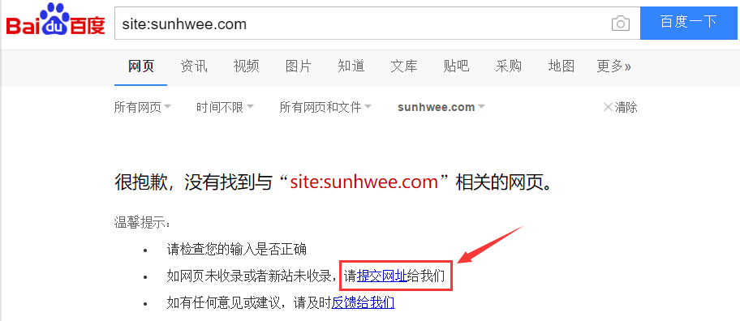
验证网站所有权
登录百度站长搜索资源平台：http://zhanzhang.baidu.com，只要有百度旗下的账号就可以登录，登录成功之后在站点管理中点击添加网站然后输入你的站点地址。
注意，这里需要输入我们自己购买的域名,不能使用
xxx.github.io之类的二级域名.因为github是不允许百度的spider（蜘蛛）爬取github上的内容的，所以如果想让你的站点被百度收录，只能使用自己购买的域名。
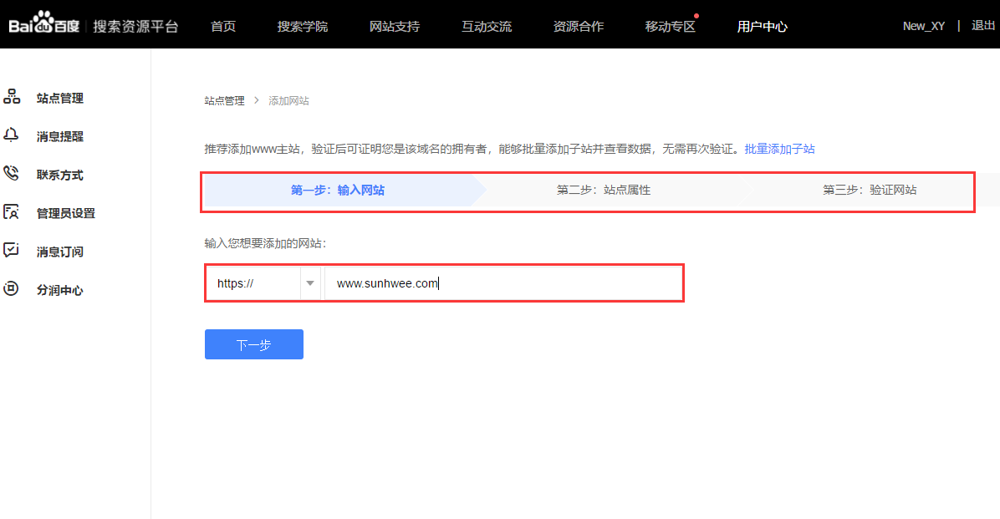
在填完网址选择完网站的类型之后需要验证网站的所有权，验证网站所有权的方式有三种：
- 文件验证。
- html标签验证
- CNAME解析验证（推荐使用）
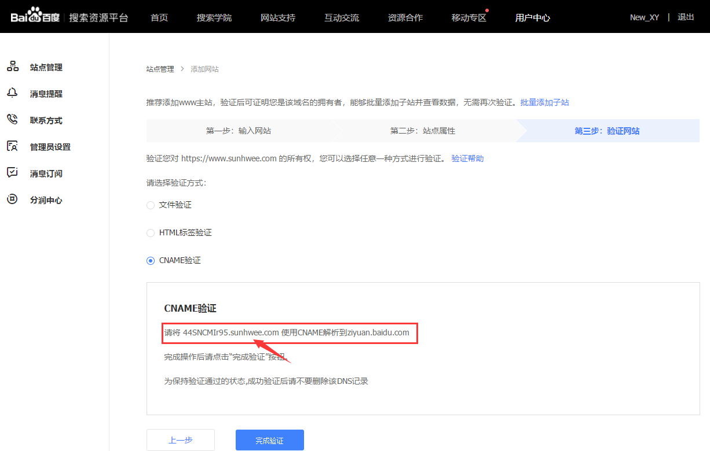
其实使用哪一种方式都可以，都是比较简单的。
但是一定要注意，使用文件验证文件存放的位置需要放在
sourc文件夹下，如果是html文件那么hexo就会将其编译，所以必须要在html头部加上的layout:false，这样就不会被hexo编译。（如果验证文件是txt格式的就不需要）
其他两种方式也是很简单的，个人推荐文件验证和CNAME验证，CNAME验证最为简单，只需加一条解析就好~
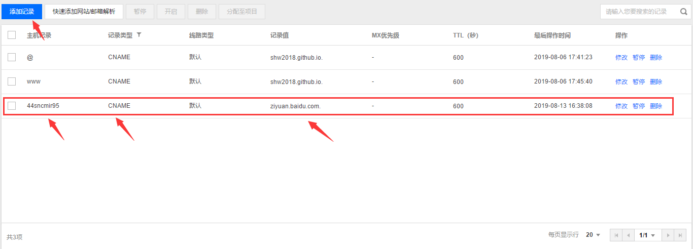
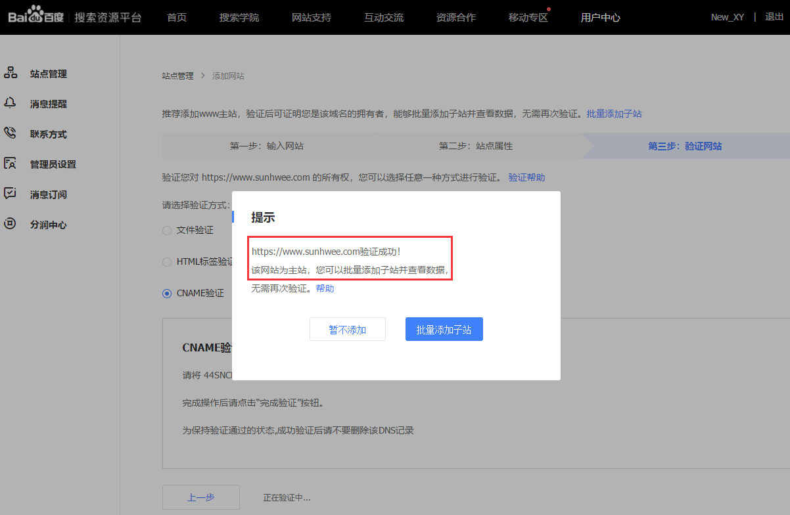
生成网站地图
我们需要使用npm自动生成网站的sitemap，然后将生成的sitemap提交到百度和其他搜索引擎
安装sitemap插件
npm install hexo-generator-sitemap --save
npm install hexo-generator-baidu-sitemap --save修改博客配置文件
在根目录配置文件.yml中修改url为你的站点地址
# URL
## If your site is put in a subdirectory, set url as 'http://yoursite.com/child' and root as '/child/'
# url: https://lingzhifeng.github.io/
url: https://socold.com
root: /
permalink: :year/:month/:day/:title/
permalink_defaults:执行完hexo g命令之后就会在网站根目录生成sitemap.xml文件和baidusitemap.xml文件，可以通过：https://socold.com/baidusitemap.xml, 查看该文件是否生成，其中sitemap.xml文件是搜索引擎通用的文件，baidusitemap.xml是百度专用的sitemap文件。
向百度提交链接
然后我们就可以将我们生成的sitemap文件提交给百度，还是在百度站长平台，找到链接提交，这里我们可以看到有两种提交方式，自动提交和手动提交，自动提交又分为主动推送、自动推送和sitemap
如何选择链接提交方式
- 主动推送：最为快速的提交方式，推荐您将站点当天新产出链接立即通过此方式推送给百度，以保证新链接可以及时被百度收录。
- 自动推送：最为便捷的提交方式，请将自动推送的JS代码部署在站点的每一个页面源代码中，部署代码的页面在每次被浏览时，链接会被自动推送给百度。可以与主动推送配合使用。
sitemap：您可以定期将网站链接放到sitemap中，然后将sitemap提交给百度。百度会周期性的抓取检查您提交的sitemap，对其中的链接进行处理，但收录速度慢于主动推送。- 手动提交：一次性提交链接给百度，可以使用此种方式。
一般主动提交比手动提交效果好，这里介绍主动提交的三种方法。从效率上来说：
主动推送>自动推送>sitemap
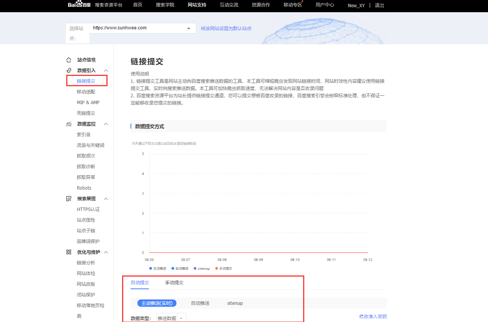
设置主动推送
安装插件hexo-baidu-url-submit
npm install hexo-baidu-url-submit --save然后再根目录的配置文件中新增字段
baidu_url_submit:
count: 80 # 提交最新的一个链接
host: socold.com # 在百度站长平台中注册的域名
token: xxxxxxxxxxxxxx # 请注意这是您的秘钥， 所以请不要把博客源代码发布在公众仓库里!
path: baidu_urls.txt # 文本文档的地址， 新链接会保存在此文本文档里再加入新的deploy：
deploy:
- type: baidu_url_submitter如图所示：
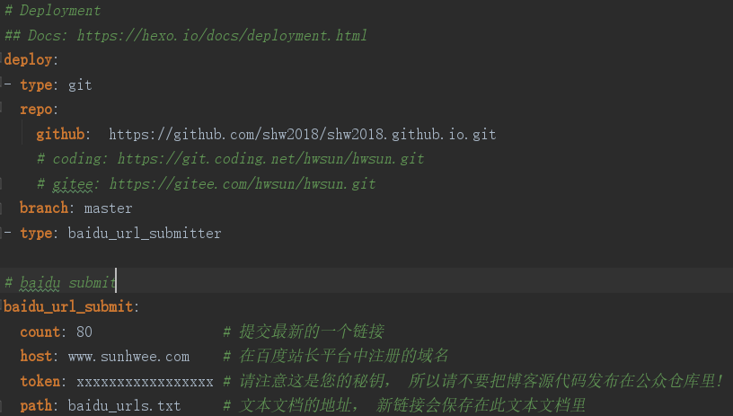
注意,这里多个
type的写法应该这么写- type,前面那个type是我推送到Github与Coding的page页面的配置,后面再讲这个。
密钥的获取位置在网页抓取中的链接提交这一块,如下所示:
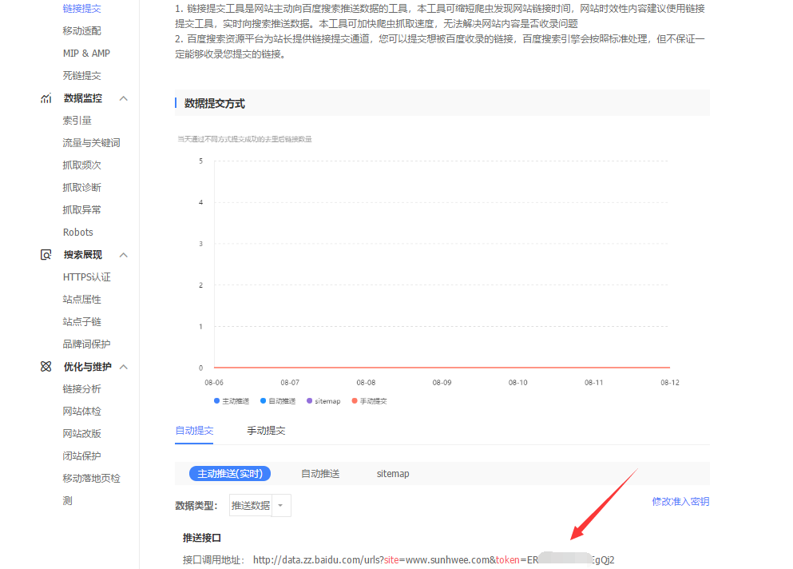
这样执行hexo deploy的时候，新的链接就会被推送了。推送成功时,会有如下终端提示：
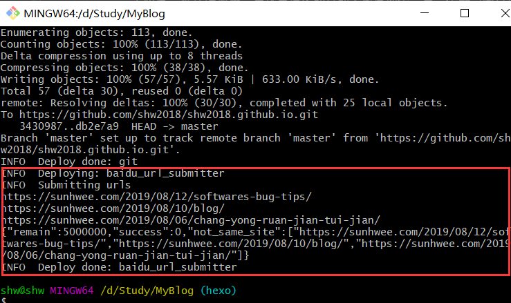
各种不同的推送反馈字段说明在这里查看,一般来说,推送失败基本都是地址不相符造成的,我们只需对比baidu_url_submit在public中生成的baidu_urls.txt的地址,与自己填写在host字段中的地址对比看是否一样即可。
设置自动推送
在主题配置文件下设置,将baidu_push设置为true:
# Enable baidu push so that the blog will push the url to baidu automatically which is very helpful for SEO
baidu_push: true然后主题文件目录加入下面代码，一般在目录/themes/matery/layout/_partial中的head.ejs中加入下面JS代码（有可能你的目录不是这样，原理类似），这样全站都有了：
<% if (theme.baidu_push) { %>
<script>
(function(){
var bp = document.createElement('script');
var curProtocol = window.location.protocol.split(':')[0];
if (curProtocol === 'https') {
bp.src = 'https://zz.bdstatic.com/linksubmit/push.js';
}
else {
bp.src = 'http://push.zhanzhang.baidu.com/push.js';
}
var s = document.getElementsByTagName("script")[0];
s.parentNode.insertBefore(bp, s);
})();
</script>
<% } %>这样每次访问博客中的页面就会自动向百度提交sitemap
sitemap方式
将我们上一步生成的sitemap文件提交到百度就可以了~
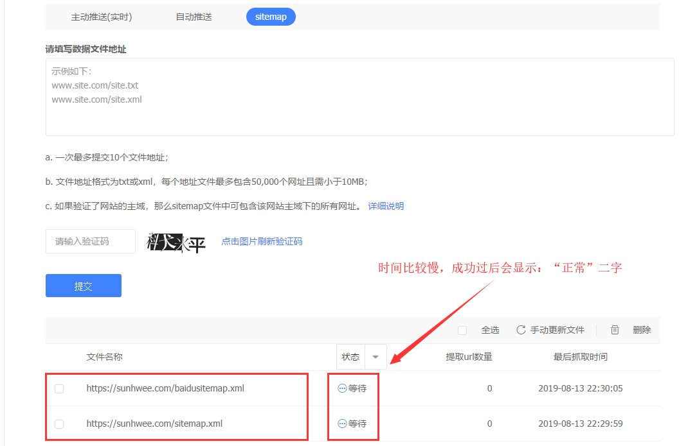
我记得被百度收录过程还是蛮久的，一度让我以为我的方法有问题，提交链接在站长工具中有显示大概是有两天的时候，站点被百度收录大概花了半个月= =，让大家看一下现在的成果。在百度搜索site:sunhwee.com已经可以搜索到结果
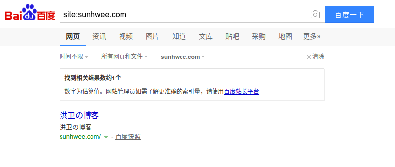
让google收录你的站点
操作步骤
相比于百度，google的效率实在不能更快，貌似十分钟左右站点就被收录了，其实方法是和百度是一样的。google站点平台：
https://www.google.com/webmasters/
- 注册账号
- 验证站点
- 提交sitemap
向
sitemap后: 进入Google Search Console-抓取-站点地图,点击「添加/测试站点地图」,输入你的博客网址. 若无报错则站点地图提交成功
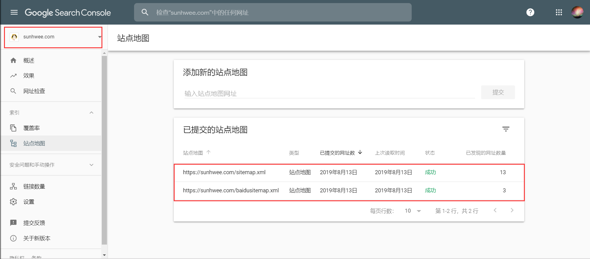
一步一步来就好，过不了过久就可以被google收录了
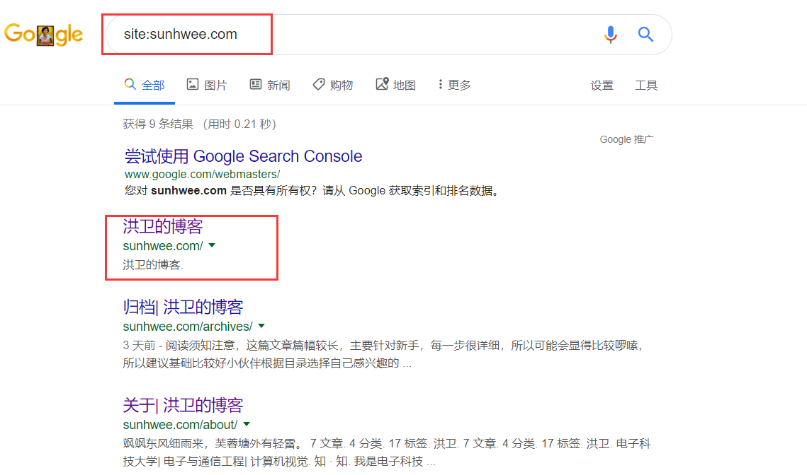
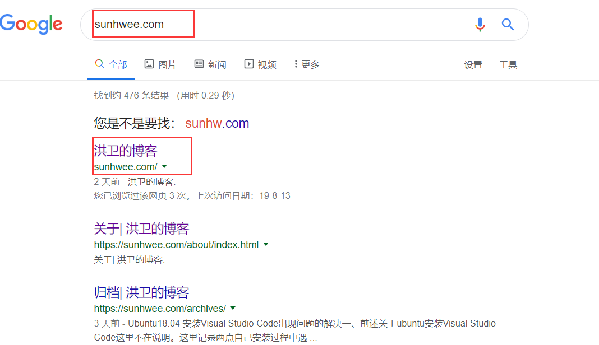
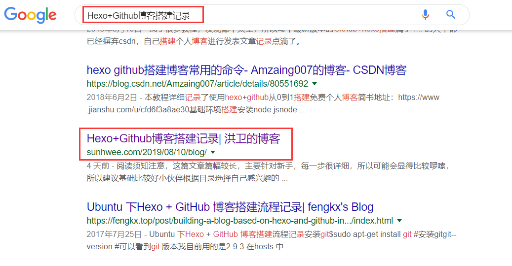
提交 robots.txt:
robots.txt是一种存放于网站根目录下的ASCII编码的文本文件，它的作用是告诉搜索引擎此网站中哪些内容是可以被爬取的，哪些是禁止爬取的。robots.txt放在博客目录下的source文件夹中，博客生成后在站点目录/public/下。我的robots.txt文件内容如下：
User-agent: *
Allow: /
Allow: /archives/
Allow: /categories/
Allow: /about/
Disallow: /js/
Disallow: /css/
Disallow: /fonts/
Disallow: /vendors/robots.txt文件更新至网站后可进入Google Search Console-抓取-robots.txt测试工具进行测试。这里部分参考自Hexo博客搜索SEO优化-谷歌篇
让其他搜索引擎收录你的站点
除了百度和google两大搜索引擎，还有搜狗、360等其他的搜索引擎，流程都是一样的，大家就自行选择添加哈，这里就不再赘述了~
优化你的url
seo搜索引擎优化认为，网站的最佳结构是用户从首页点击三次就可以到达任何一个页面，但是我们使用hexo编译的站点打开文章的url是：sitename/year/mounth/day/title四层的结构，这样的url结构很不利于seo，爬虫就会经常爬不到我们的文章，于是，我们需要优化一下网站文章url
改成英文标题
我们可以将url直接改成sitename/title的形式，并且title最好是用英文，在根目录的配置文件下修改permalink如下：
url: https://socold.com
root: /
permalink: :title.html
permalink_defaults:安装插件用中文拼音标题
插件hexo-abbrlink实现了这个功能，它将原来的URL地址重新进行了进制转换和再编码。执行一下命令以安装hexo-abbrlink。
npm install hexo-abbrlink --save配置博客根目录下的_config.yml文件。
# permalink: :title/
permalink: archives/:abbrlink.html
abbrlink:
alg: crc32 # 算法：crc16(default) and crc32
rep: hex # 进制：dec(default) and hex运行hexo clean和hexo g命令来重新生成文件看看，可以清楚的看到，URL结构成功变为了3层。
其他seo优化
seo优化应该说是一个收益延迟的行为，可能你做的优化短期内看不到什么效果，但是一定要坚持，seo优化也是有很深的可以研究的东西，从我们最初的网站设计，和最基础的标签的选择都有很大的关系，网站设计就如我们刚刚说的，要让用户点击三次可以到达网站的任何一个页面，要增加高质量的外链，增加相关推荐（比如说我们经常见到右侧本站的最高阅读的排名列表），然后就是给每一个页面加上keyword和描述。
在代码中，我们应该写出能让浏览器识别的语义化HTML，这样有助于爬虫抓取更多的有效信息：爬虫依赖于标签来确定上下文和各个关键字的权重；并且对外链设置nofollow标签，避免spider爬着爬着就爬出去了（减少网站的跳出率），并且我们要尽量在一些比较大的网站增加我们站点的曝光率，因为spider会经常访问大站，比如我们在掘金等技术社区发表文章中带有我们的站点，这样spider是很有可能爬到我们中的站点的，so….
- 网站外链的推广度、数量和质量
- 网站的内链足够强大
- 网站的原创质量
- 网站的年龄时间
- 网站的更新频率（更新次数越多越好）
- 网站的服务器
- 网站的流量：流量越高网站的权重越高
- 网站的关键词排名：关键词排名越靠前，网站的权重越高
- 网站的收录数量：网站百度收录数量越多，网站百度权重越高
- 网站的浏览量及深度：用户体验越好，网站的百度权重越高
优化代码块样式
由于代码高亮插件prism_plugin的样式没有行号显示和代码块整体复制功能，不是很方便，为了优化观感和易用性，我们可以对其进行修改：
给代码块开启行号
我们在配置文件.yml中找到prism_plugin配置项line_number: false（# default false）改为true，开启行号，但是在我们这个matery主题中中是无效的，有bug需要改一下matery.css样式参数,在第95行位置将：
pre {
padding: 1.5rem !important;
margin: 1rem 0 !important;
background: #272822;
overflow: auto;
border-radius: 0.35rem;
tab-size: 4;
}改为：
pre {
padding: 1.5rem 1.5rem 1.5rem 3.3rem !important;
margin: 1rem 0 !important;
background: #272822;
overflow: auto;
border-radius: 0.35rem;
tab-size: 4;
}注释掉紧接着的code代码块里面的font-size项，如下：
code {
padding: 1px 5px;
font-family: Inconsolata, Monaco, Consolas, 'Courier New', Courier, monospace;
/*font-size: 0.91rem;*/
color: #e96900;
background-color: #f8f8f8;
border-radius: 2px;
}好了这下可以显示行号了，如图：
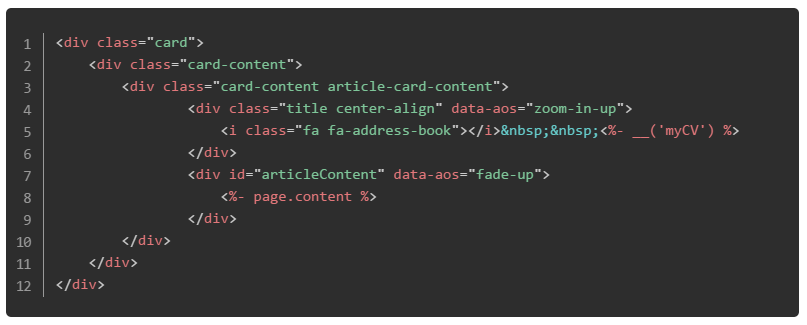
添加代码块复制功能
优化网站加载速度
优化图片加载
issue问题：优化网站加载逻辑问题：图片最后加载，加入图片懒加载方法。
hexo-lazyload-image的作用原理是讲你博客里面img标签的src属性替换为一个loading image，把真实的图片地址放在data-origin属性下面。然后当你的网页翻到那张图片时（也就是图片在窗口中完全可见时），他会有一段js用data-origin的内容替换src，达到懒加载的目的。
一般情况下懒加载和gallery插件会发生冲突，比如按照我上面所说，最终结果就会变成，可能只有第一张图片在gallery中打开是原图，右翻左翻都会是那张loading image，需要你掌握js，可以修改matery.js里面的内容，甚至可能换一个gallery，比如photosiwpe之类的。
解决方法：修改/themes/matery/source/js中的matery.js文件
第103行：
$('#articleContent, #myGallery').lightGallery({
selector: '.img-item',
// 启用字幕
subHtmlSelectorRelative: true,
showThumbByDefault: false //这句加上
});后面加上：
$(document).find('img[data-original]').each(function(){
$(this).parent().attr("href", $(this).attr("data-original"));
});再装个插件https://github.com/Troy-Yang/hexo-lazyload-image。在博客根目录配置.yml文件加入对应字段，如下：
# lazyload configuration 2019.08.23
lazyload:
enable: true
onlypost: false
loadingImg: # eg ./images/loading.gif好了，这样实现了博客网站的图片懒加载。
Gulp实现代码压缩
Gulp实现代码压缩，以提升网页加载速度。
安装Gulp插件和5个功能模块
首先我们需要安装Gulp插件和5个功能模块，依次运行下面的两条命令。
npm install gulp --save #安装gulp
# 安装功能模块
npm install gulp-htmlclean gulp-htmlmin gulp-minify-css gulp-uglify gulp-imagemin --save
# 额外的功能模块
npm install gulp-debug gulp-clean-css gulp-changed gulp-if gulp-plumber gulp-babel babel-preset-es2015 del --save建立js文件
接下来在博客的根目录下新建gulpfile.js文件，并复制下面的内容到文件中。
var gulp = require("gulp");
var debug = require("gulp-debug");
var cleancss = require("gulp-clean-css"); //css压缩组件
var uglify = require("gulp-uglify"); //js压缩组件
var htmlmin = require("gulp-htmlmin"); //html压缩组件
var htmlclean = require("gulp-htmlclean"); //html清理组件
var imagemin = require("gulp-imagemin"); //图片压缩组件
var changed = require("gulp-changed"); //文件更改校验组件
var gulpif = require("gulp-if"); //任务 帮助调用组件
var plumber = require("gulp-plumber"); //容错组件（发生错误不跳出任务，并报出错误内容）
var isScriptAll = true; //是否处理所有文件，(true|处理所有文件)(false|只处理有更改的文件)
var isDebug = true; //是否调试显示 编译通过的文件
var gulpBabel = require("gulp-babel");
var es2015Preset = require("babel-preset-es2015");
var del = require("del");
var Hexo = require("hexo");
var hexo = new Hexo(process.cwd(), {}); // 初始化一个hexo对象
// 清除public文件夹
gulp.task("clean", function() {
return del(["public/**/*"]);
});
// 下面几个跟hexo有关的操作，主要通过hexo.call()去执行，注意return
// 创建静态页面 （等同 hexo generate）
gulp.task("generate", function() {
return hexo.init().then(function() {
return hexo
.call("generate", {
watch: false
})
.then(function() {
return hexo.exit();
})
.catch(function(err) {
return hexo.exit(err);
});
});
});
// 启动Hexo服务器
gulp.task("server", function() {
return hexo
.init()
.then(function() {
return hexo.call("server", {});
})
.catch(function(err) {
console.log(err);
});
});
// 部署到服务器
gulp.task("deploy", function() {
return hexo.init().then(function() {
return hexo
.call("deploy", {
watch: false
})
.then(function() {
return hexo.exit();
})
.catch(function(err) {
return hexo.exit(err);
});
});
});
// 压缩public目录下的js文件
gulp.task("compressJs", function() {
return gulp
.src(["./public/**/*.js", "!./public/libs/**"]) //排除的js
.pipe(gulpif(!isScriptAll, changed("./public")))
.pipe(gulpif(isDebug, debug({ title: "Compress JS:" })))
.pipe(plumber())
.pipe(
gulpBabel({
presets: [es2015Preset] // es5检查机制
})
)
.pipe(uglify()) //调用压缩组件方法uglify(),对合并的文件进行压缩
.pipe(gulp.dest("./public")); //输出到目标目录
});
// 压缩public目录下的css文件
gulp.task("compressCss", function() {
var option = {
rebase: false,
//advanced: true, //类型：Boolean 默认：true [是否开启高级优化（合并选择器等）]
compatibility: "ie7" //保留ie7及以下兼容写法 类型：String 默认：''or'*' [启用兼容模式； 'ie7'：IE7兼容模式，'ie8'：IE8兼容模式，'*'：IE9+兼容模式]
//keepBreaks: true, //类型：Boolean 默认：false [是否保留换行]
//keepSpecialComments: '*' //保留所有特殊前缀 当你用autoprefixer生成的浏览器前缀，如果不加这个参数，有可能将会删除你的部分前缀
};
return gulp
.src(["./public/**/*.css", "!./public/**/*.min.css"]) //排除的css
.pipe(gulpif(!isScriptAll, changed("./public")))
.pipe(gulpif(isDebug, debug({ title: "Compress CSS:" })))
.pipe(plumber())
.pipe(cleancss(option))
.pipe(gulp.dest("./public"));
});
// 压缩public目录下的html文件
gulp.task("compressHtml", function() {
var cleanOptions = {
protect: /<\!--%fooTemplate\b.*?%-->/g, //忽略处理
unprotect: /<script [^>]*\btype="text\/x-handlebars-template"[\s\S]+?<\/script>/gi //特殊处理
};
var minOption = {
collapseWhitespace: true, //压缩HTML
collapseBooleanAttributes: true, //省略布尔属性的值 <input checked="true"/> ==> <input />
removeEmptyAttributes: true, //删除所有空格作属性值 <input id="" /> ==> <input />
removeScriptTypeAttributes: true, //删除<script>的type="text/javascript"
removeStyleLinkTypeAttributes: true, //删除<style>和<link>的type="text/css"
removeComments: true, //清除HTML注释
minifyJS: true, //压缩页面JS
minifyCSS: true, //压缩页面CSS
minifyURLs: true //替换页面URL
};
return gulp
.src("./public/**/*.html")
.pipe(gulpif(isDebug, debug({ title: "Compress HTML:" })))
.pipe(plumber())
.pipe(htmlclean(cleanOptions))
.pipe(htmlmin(minOption))
.pipe(gulp.dest("./public"));
});
// 压缩 public/uploads 目录内图片
gulp.task("compressImage", function() {
var option = {
optimizationLevel: 5, //类型：Number 默认：3 取值范围：0-7（优化等级）
progressive: true, //类型：Boolean 默认：false 无损压缩jpg图片
interlaced: false, //类型：Boolean 默认：false 隔行扫描gif进行渲染
multipass: false //类型：Boolean 默认：false 多次优化svg直到完全优化
};
return gulp
.src("./public/medias/**/*.*")
.pipe(gulpif(!isScriptAll, changed("./public/medias")))
.pipe(gulpif(isDebug, debug({ title: "Compress Images:" })))
.pipe(plumber())
.pipe(imagemin(option))
.pipe(gulp.dest("./public"));
});
// 执行顺序： 清除public目录 -> 产生原始博客内容 -> 执行压缩混淆 -> 部署到服务器
gulp.task(
"build",
gulp.series(
"clean",
"generate",
"compressHtml",
"compressCss",
"compressJs",
"compressImage",
gulp.parallel("deploy")
)
);
// 默认任务
gulp.task(
"default",
gulp.series(
"clean",
"generate",
gulp.parallel("compressHtml", "compressCss", "compressImage", "compressJs")
)
);
//Gulp4最大的一个改变就是gulp.task函数现在只支持两个参数，分别是任务名和运行任务的函数测试效果
最后hexo clean && hexo g && gulp && hexo d就可以了。
注意，很可能你会运行到第三步，也就是运行gulp压缩命令时会报错，如图所示：
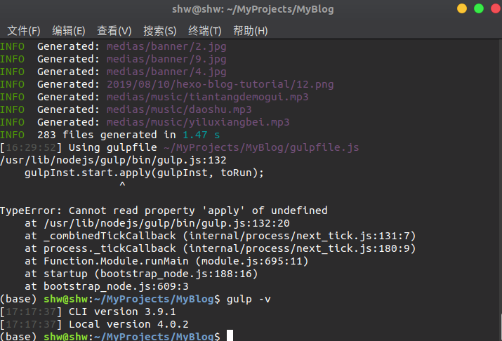
那是因为gulp安装的本地版本和hexo自带的版本不对应导致，第三步gulp压缩可以用下面命令强制使用本地版本：
node ./node_modules/gulp/bin/gulp.jsGithub & Coding Pages 双部署
thub & Coding Pages双部署,对国内,国外用户进行分流访问,以提升网站的访问速度.Github Pages的部署前面已经说了,这里就讲一讲Coding Pages如何部署。其实与Github Pages也类似,先到coding官网注册,创建一个与用户名同名的仓库,添加仓库地址到配置文件中,在根目录_config.yml对应地方添加如下:
# Deployment
## Docs: https://hexo.io/docs/deployment.html
deploy:
- type: git
repo:
github: https://github.com/shw2018/shw2018.github.io.git # github 仓库地址
coding: https://git.dev.tencent.com/sunhwee/sunhwee.git # coding 仓库地址
branch: master
- type: baidu_url_submitter把本地生成SSH公匙添加到Coding这一步看我前面的教程,原理类似.然后hexo clean && hexo g && hexo d部署上去就是了．当然，部署上去后，你需要开启'page`服务.
你可以在pages设置里面自定义域名，区域名解析控制台，添加两条CNAME记录，将域名指向RepoName.coding.me就可以的，申请ssl证书，强制开启https
可能遇到的问题:
coding pages申请ssl证书总是提示：错误
这里提一句，如果你是github pages和coding pages双部署，用同一个域名的话，可以将xxx.github.io解析成 境外,xxx.coding.me解析成默认,这个时候如果你之前就申请过ssl证书的话，再在coding里面申请ssl证书会一直提示失败,解决办法：
先去域名解析控制台，将境外解析的两条
CNAME记录 暂停,过个五六分钟，回到coding点击申请ssl,很快就会提示，申请成功！刚好我过程中遇到了这个问题，所以把它记下来，方便后面的小伙伴看到．
一些注意事项
备份博客源文件
有时候我们想换一台电脑继续写博客，最简单的方法就是把博客整个目录拷贝过去，就是这么暴力。不过，这种方法有个问题就是要是那天电脑崩了，本地源文件丢失了，比较麻烦，所以这时候就可以将博客目录下的所有源文件都上传到github上面。
首先在github博客仓库下新建一个分支hexo，然后git clone到本地，把.git文件夹拿出来，放在博客根目录下。
然后git branch -b hexo切换到hexo分支，然后git add .，然后git commit -m "xxx"，最后git push origin hexo提交就行了。具体效果可以看我的博客源文件仓库：传送门。
大家也可以先用下文hexo安装方法安装完hexo，然后直接git clone -b hexo https://github.com/shw2018/shw2018.github.io.git克隆我的所有源文件，这是我目前修改完的基本没bug的定制化的博客，可以直接拿来用。
持续更新中…，如果遇到问题欢迎联系我，在文章最后评论区【留言和讨论】，当然，欢迎点击文章最后的打赏按键，请博主一杯冰阔乐，笑～